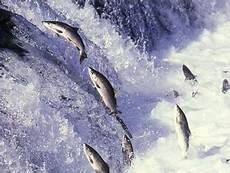

鮭魚有迴游的特性，在一定的生命週期中會從原有的棲息地遷徒回原生地。
鮭魚在淡水中出生，長大之後在鹹鹹的大海裡洄游，也把自己養得全身OMEGA-3油滋滋地。生命最後的三個月，成群結隊地游回家、游回他們數千公里的出生地。鮭魚們居然可以從好幾百萬公升的水裡找出那一滴來自於出生地的淡水，然後各自沿著婉蜒的水線逆游向內陸的高山森林!
當一對鮭魚費盡千辛萬苦回到產卵區後，母鮭魚選擇了在潔淨的冰河淺溪，幾乎以站立的方式，分批成五至六次的時間，將約四千顆的魚卵產下。在這同一時間，公鮭魚立即趕上來為它們授精，等完成產卵與授精之任務後，這對苦命鴛鴦就先後死掉。魚卵經 9～14週的孵化，約可育出 800～1，000條的小魚苗。
這些魚苗因受到周圍環境的威脅傷害，以及大熊、鳥類或大魚的無情吞噬，真正能長到 4～6 吋的小魚兒，可能只有200條左右而已。到此時，這些活潑跳躍的小鮭魚，便開始順溪隨流而下，先游到淡水與鹹水交會的河口處，前游後退在河口適應幾個月後，就往深水的太平洋海域游去。
在大海裡經過三年的長大，到了四歲時，母鮭魚又會和公鮭魚聯袂返航，途經長達 數千公里遠的游泳，回到海與河的交會口，通過了魚梯和魚道，稍做休息後便開始逆流而上，從此在數百公里的河流中，不眠不休、不吃不喝共游了數十天，撞得頭破血流至死不渝，同時皮膚也從銀色、灰色轉變成紅色或粉紅色，頭也變成為墨綠色，公魚的牙齒突出、背鰭拱出，變得兇暴無比，只為了保護母魚不被傷害。它們這一路千辛萬苦的逆流回產卵區，只為了達成產卵與授精繁衍下一代，使族群生生不息代代循環下去罷了！